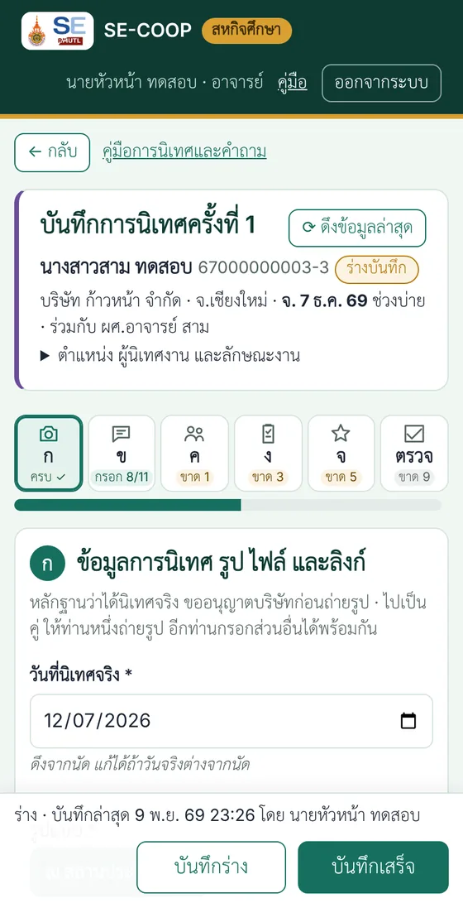
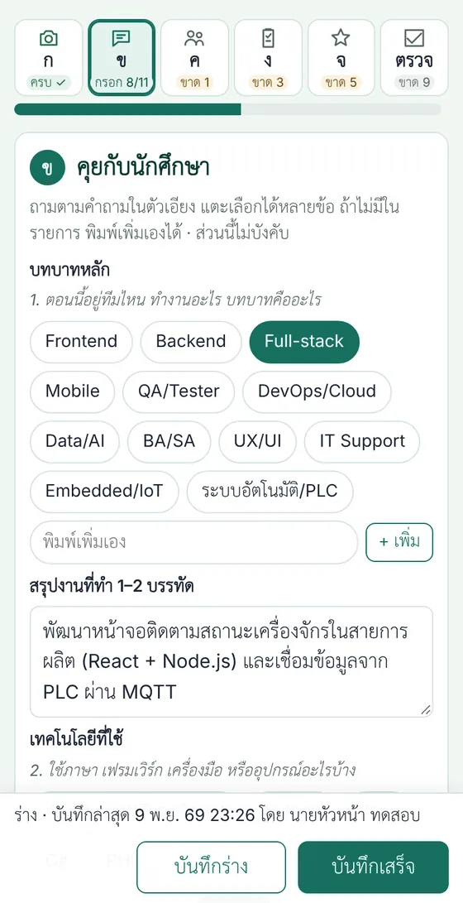
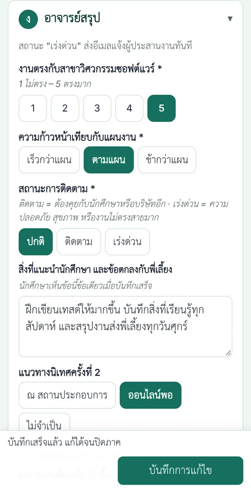
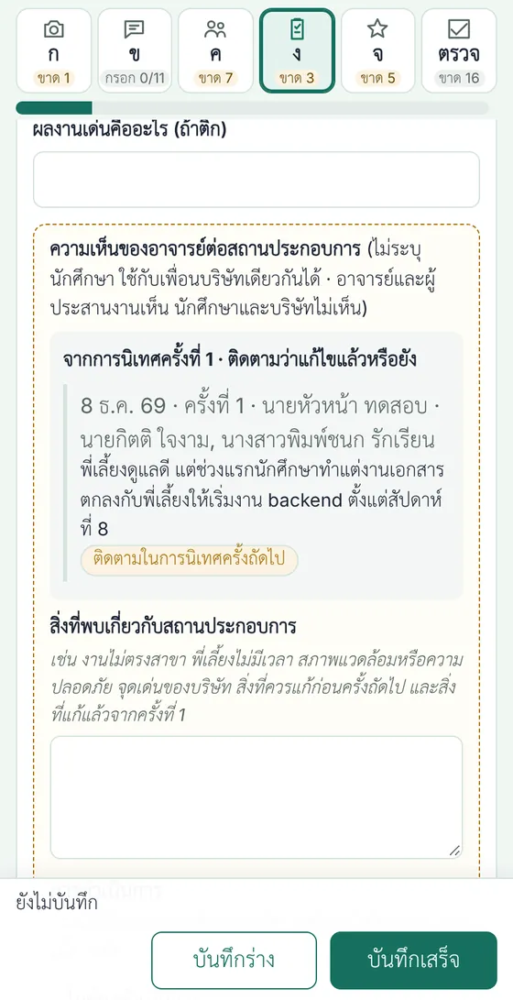
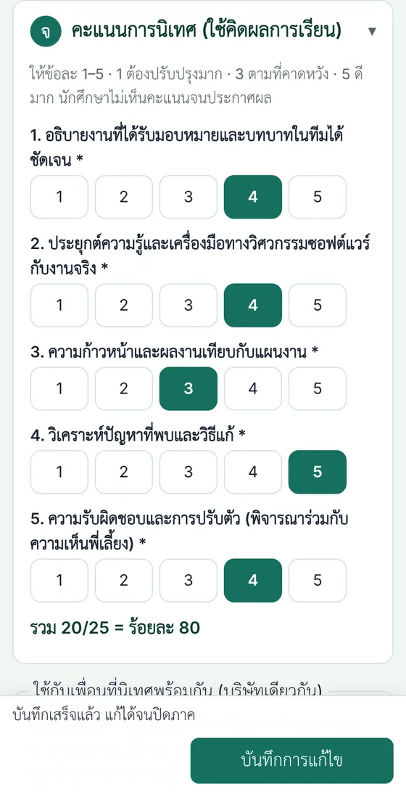
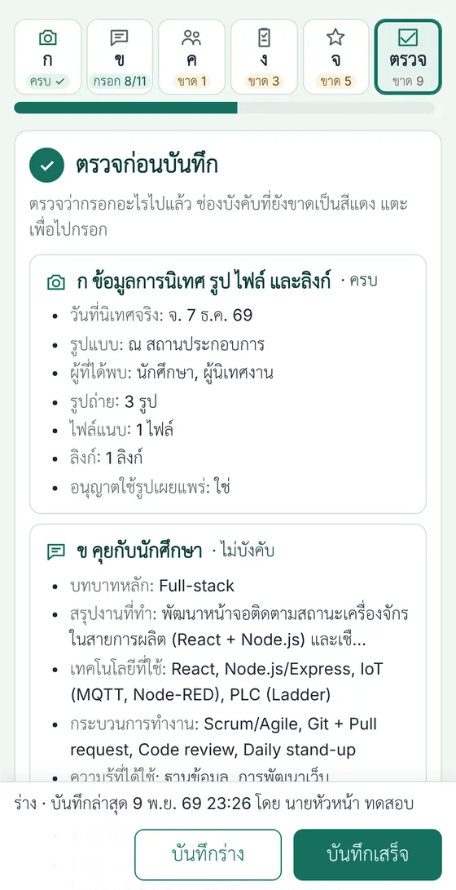
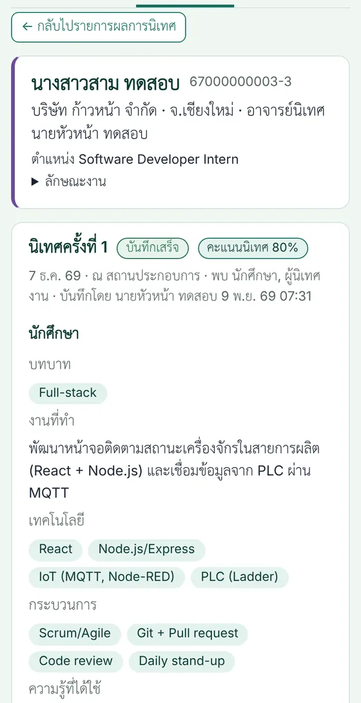

คู่มือการนิเทศและแบบบันทึก
นิเทศหนึ่งครั้งใช้ 45–60 นาที บันทึกผลบนมือถือระหว่างคุยหรือหลังกลับมา ส่วนใหญ่แตะเลือก กรอกให้เสร็จภายใน 3 วันหลังนิเทศ

แบบบันทึกการนิเทศเปิดใช้ในระบบ SE-COOP แล้ว
วันนิเทศ แท็บ "นักศึกษาของฉัน" กด "เข้านิเทศ" ในตารางนิเทศหรือใต้นัด (หลังวันนิเทศปุ่มเป็น "บันทึกผลนิเทศ") แบบบันทึกแบ่งเป็น 5 ส่วนให้แตะสลับ พร้อมหน้าตรวจก่อนบันทึก ไปเป็นคู่ กรอกจากเครื่องของท่านใดก็ได้ ถ่ายรูปจากมือถือได้ทันที กด "บันทึกร่าง" ไว้ก่อนได้ แล้วกด "บันทึกเสร็จ" เมื่อช่องบังคับครบ คะแนนการนิเทศ (ส่วน จ) ใช้คิดผลการเรียนของนักศึกษา
ขั้นตอนการนิเทศ
ก่อนไป (1–3 วัน)
- ตรวจว่านักศึกษากดยืนยันนัดแล้ว (ป้าย "นักศึกษายืนยันแล้ว" ในแท็บนักศึกษาของฉัน)
- อ่านข้อมูลนักศึกษาในระบบ: งานที่ทำ ผู้นิเทศงาน การเดินทาง ที่จอดรถ ข้อกำหนดการเข้า–ออก
- บอกนักศึกษาให้เตรียมเล่างาน 10 นาที (สไลด์ 3–5 หน้า หรือเปิดงานจริงถ้าบริษัทอนุญาต)
- นิเทศนอกอำเภอเมืองเชียงใหม่ ขออนุมัติเดินทางตามที่คณะกำหนด (ภาคกลางและต่างจังหวัดล่วงหน้า 5 วันทำการ)
ระหว่างนิเทศ (45–60 นาที)
| ช่วง | เวลา | ทำอะไร | ส่วนในแบบบันทึก |
|---|---|---|---|
| ทักทาย | 5 นาที | แนะนำตัว บอกวัตถุประสงค์ ขออนุญาตถ่ายรูป | ก |
| นักศึกษาเล่างาน | 10–15 นาที | ฟังและถามตามคำถามส่วน ข | ข |
| คุยกับผู้นิเทศงาน | 15 นาที | ถามตามส่วน ค แตะคะแนน 7 ด้าน คุยตามลำพังได้ถ้าเหมาะสม | ค |
| ดูที่ทำงาน | 5–10 นาที | รูปหมู่และบรรยากาศ ไม่ถ่ายหน้าจอหรือเอกสารที่เป็นความลับ | ก |
| สรุป | 5 นาที | ข้อเสนอแนะ เรื่องที่ต้องติดตาม แนวทางนิเทศครั้งที่ 2 | ง จ |
นิเทศออนไลน์ใช้ลำดับเดียวกัน ใช้ภาพหน้าจอการประชุมแทนรูปถ่าย (ขออนุญาตก่อน) ไม่บังคับรูป
หลังนิเทศ
- กรอกให้ครบแล้วกด "บันทึกเสร็จ" ภายใน 3 วัน ระบบเตือนในหน้าสิ่งที่ต้องทำถ้ายังไม่เสร็จ นัดนั้นเปลี่ยนเป็น "นิเทศแล้ว"
- พบปัญหาเร่งด่วน เช่น ความปลอดภัย สุขภาพ หรืองานไม่ตรงสายมาก เลือกสถานะ "เร่งด่วน" ระบบส่งอีเมลถึงผู้ประสานงานทันที เรื่องอ่อนไหวเขียนใน "บันทึกถึงผู้ประสานงาน (ลับ)"
- นักศึกษาเห็นเฉพาะข้อ "สิ่งที่แนะนำนักศึกษา" หลังบันทึกเสร็จ ไม่เห็นคะแนน
บันทึกผลการนิเทศในระบบ
เปิดแบบบันทึก
ภาพที่ 1- แท็บ "นักศึกษาของฉัน" ปุ่มของนัดเปลี่ยนตามวัน: ก่อนวันนิเทศ "ดูคำถาม/แบบบันทึก" · วันนิเทศ "เข้านิเทศ" (สีทอง ทั้งในตารางนิเทศของฉันและใต้นัด) · หลังวัน "บันทึกผลนิเทศ" · มีร่างแล้ว "บันทึกผลต่อ" · บันทึกเสร็จแล้ว "ดู/แก้บันทึกผล"
- วันก่อนนิเทศ ระบบส่งอีเมลสรุปนัดพรุ่งนี้ถึงท่าน พร้อมแผนที่และเบอร์ติดต่อ · แก้วันนัดได้ที่ปุ่ม "แก้วัน/เวลา" ใต้นัดหรือในตารางนิเทศ
แตะไอคอนเพื่อสลับส่วน
ภาพที่ 2- แบบบันทึกแบ่งเป็นปุ่มไอคอน 6 ปุ่มด้านบน: ก หลักฐาน · ข นักศึกษา · ค พี่เลี้ยง · ง อาจารย์สรุป · จ คะแนน · ตรวจ แตะเพื่อไปส่วนนั้น กรอกส่วนใดก่อนก็ได้ หรือกด "ถัดไป ›" ท้ายแต่ละส่วน
- ใต้ไอคอนบอกสถานะของส่วน: "ครบ ✓" · "ขาด n" (ช่องบังคับที่ยังไม่กรอก) · "กรอก x/y" (ส่วน ข ที่ไม่บังคับ) แถบสีเขียวคือความคืบหน้าของช่องบังคับทั้งหมด
- ตำแหน่ง ผู้นิเทศงาน และลักษณะงานที่นักศึกษากรอก พับไว้ใต้หัวแบบบันทึก
ส่วน ก: วันที่ รูปแบบ รูป ไฟล์ และลิงก์
ภาพที่ 3- วันที่และรูปแบบดึงจากนัด แก้ได้ถ้าวันจริงต่าง แตะ "ผู้ที่ได้พบ"
- กด "ถ่ายรูป / เลือกรูป" เลือกได้หลายรูป ระบบย่อรูปก่อนส่ง ใช้เน็ตมือถือได้ นิเทศ ณ สถานประกอบการต้องมีอย่างน้อย 1 รูป
- สไลด์ที่นักศึกษานำเสนอ แนบเป็นไฟล์ PDF หรือใส่ลิงก์ Canva Google Slides ได้
- ติ๊ก "บริษัทอนุญาตให้ใช้รูปเผยแพร่" เฉพาะเมื่อบริษัทอนุญาต
ส่วน ข: คุยกับนักศึกษา
ภาพที่ 4- คำถามตัวเอียงใต้แต่ละช่องคือสิ่งที่ถาม แตะเลือกได้หลายข้อ ไม่มีในรายการให้พิมพ์ในช่อง "พิมพ์เพิ่มเอง" แล้วกด "+ เพิ่ม"
- รายการเทคโนโลยีมีทั้งซอฟต์แวร์ ฮาร์ดแวร์ PLC IoT และโปรแกรมควบคุมเครื่องจักร
ส่วน ค: คุยกับผู้นิเทศงาน
ภาพที่ 5- ถามพี่เลี้ยงแล้วแตะคะแนน 7 ด้าน 1–5 ด้านที่พี่เลี้ยงไม่ได้สังเกต แตะ "ไม่ได้สังเกต" จุดเด่น สิ่งที่ควรพัฒนา และความสนใจรับนักศึกษาคนนี้ เป็นความเห็นรายคน
- กรอบเส้นประ "ความเห็นภาพรวมของบริษัท" (ทักษะที่ต้องการ ข้อเสนอแนะต่อหลักสูตร การรับรุ่นต่อไป ความพึงพอใจ) ไม่ระบุนักศึกษา ไม่บังคับ แต่เป็นข้อมูลสำคัญของการปรับปรุงหลักสูตร และใช้ร่วมกับเพื่อนบริษัทเดียวกันได้
ส่วน ง: อาจารย์สรุป
ภาพที่ 6–7- งานตรงสาขา ความก้าวหน้าเทียบแผน และสถานะการติดตาม เป็นช่องบังคับ
- "สิ่งที่แนะนำนักศึกษา" เป็นข้อเดียวที่นักศึกษาเห็น เขียนให้นำไปทำได้
- ความเห็นของอาจารย์ต่อสถานประกอบการ (ไม่บังคับ ไม่ระบุนักศึกษา): สิ่งที่พบเกี่ยวกับบริษัท เช่น งานไม่ตรงสาขา พี่เลี้ยงไม่มีเวลา สภาพแวดล้อมหรือความปลอดภัย จุดเด่นของบริษัท และการดำเนินการ: ไม่ต้องดำเนินการ · ติดตามในการนิเทศครั้งถัดไป · ขอให้ผู้ประสานงานติดต่อบริษัท (ส่งอีเมลถึงผู้ประสานงาน) ใช้กับเพื่อนบริษัทเดียวกันได้
- นิเทศครั้งที่ 2 กรอบนี้แสดงสิ่งที่อาจารย์บันทึกไว้ครั้งที่ 1 ให้ถามบริษัทว่าแก้แล้วหรือยัง (ภาพที่ 7)
ส่วน จ: คะแนนการนิเทศ
ภาพที่ 8- ให้ 5 ข้อ ข้อละ 1–5 ระบบรวมเป็นร้อยละทันที คะแนนนี้คือส่วน "การนิเทศ" ในเกณฑ์ S/U
ตรวจ ใช้กับเพื่อน แล้วกดบันทึก
ภาพที่ 9- ปุ่ม "ตรวจ" สรุปสิ่งที่กรอกแล้วของทุกส่วน ช่องบังคับที่ยังขาดเป็นสีแดง แตะเพื่อไปกรอก ก่อนกด "บันทึกเสร็จ"
- นิเทศหลายคนในบริษัทเดียวกัน ติ๊กชื่อเพื่อนในหน้าตรวจ ระบบคัดลอกรูป ไฟล์ ลิงก์ วันที่ และความเห็นภาพรวมของบริษัทไปเป็นร่างของเพื่อน (เฉพาะช่องที่ว่าง) แล้วจึงกรอกส่วนเฉพาะตัวของแต่ละคน
- กด "บันทึกร่าง" ได้ทุกเมื่อ ระบบบันทึกร่างให้อัตโนมัติทุก 40 วินาทีด้วย กด "บันทึกเสร็จ" เมื่อช่องบังคับครบ หลังจากนั้นแก้ได้จนปิดภาค
ไปนิเทศเป็นคู่
อาจารย์นิเทศและอาจารย์ร่วมนิเทศ- อาจารย์ท่านใดก็ได้กรอกแบบบันทึกจากมือถือหรือเครื่องของตนเอง อาจารย์ร่วมเห็นปุ่ม "ดูคำถาม/แบบบันทึก" ในตารางนิเทศของตนตั้งแต่ก่อนวันนิเทศ และปุ่ม "เข้านิเทศ" ในวันนิเทศ
- กรอกพร้อมกันได้ เช่น ท่านหนึ่งถ่ายรูปและกรอกส่วน ก อีกท่านกรอกส่วน ค และ จ ระบบบันทึกเฉพาะช่องที่แต่ละท่านแก้ ไม่ทับข้อมูลของอีกท่าน กด "⟳ ดึงข้อมูลล่าสุด" เพื่อดูสิ่งที่อีกท่านบันทึกแล้ว ถ้าแก้ช่องเดียวกัน ระบบใช้ค่าที่บันทึกทีหลังและแจ้งเตือน
- อาจารย์ร่วมไม่เห็นเบอร์โทรและอีเมลของนักศึกษาและผู้นิเทศงานในแบบบันทึก (ตามประกาศการคุ้มครองข้อมูลส่วนบุคคล) ส่วนการแก้วันนัดทำได้เฉพาะอาจารย์นิเทศ
ดูผลการนิเทศของทุกคน
ภาพที่ 10–11- แท็บ "ผลการนิเทศ" อาจารย์ทุกท่านดูได้ กรองรายการที่ยังไม่บันทึก ต้องติดตาม หรือผลงานเด่น กดที่แถวเพื่อดูรายละเอียด รูป และไฟล์
- หน้านี้ไม่มีเบอร์โทร อีเมล และบันทึกลับ ผู้ประสานงานส่งออกเป็น Excel สำหรับรายงาน AUN-QA
- ด้านบนรวมความเห็นของอาจารย์ต่อสถานประกอบการทุกบริษัท ผู้ประสานงานกด "รับเรื่องแล้ว" เมื่อติดต่อบริษัทแล้ว
ภาพตัวอย่างใช้ข้อมูลและรูปสมมติ เลื่อนดูภาพถัดไปได้











คำถามที่ใช้คุย
เปิดหน้านี้หรือแบบบันทึกบนมือถือระหว่างคุยได้ ไม่ต้องถามครบทุกข้อตามลำดับ ให้เป็นการคุยตามธรรมชาติ
ส่วน ข คุยกับนักศึกษา
| # | คำถาม | ช่องในแบบบันทึก |
|---|---|---|
| 1 | ตอนนี้อยู่ทีมไหน ทำงานอะไร บทบาทคืออะไร | บทบาทหลัก + สรุปงาน 1–2 บรรทัด |
| 2 | ใช้ภาษา เฟรมเวิร์ก เครื่องมือ หรืออุปกรณ์อะไรบ้าง | เทคโนโลยีที่ใช้ |
| 3 | ทีมทำงานแบบไหน มี code review หรือเขียนเทสต์ไหม | กระบวนการทำงาน |
| 4 | ความรู้จากหลักสูตรเรื่องไหนได้ใช้มากที่สุด | ความรู้ที่ได้ใช้ |
| 5 | อะไรที่อยากให้หลักสูตรสอนเพิ่มก่อนออกฝึก | ความรู้ที่ยังขาด |
| 6 | ความพร้อมของตัวเองต่องานนี้เท่าไร (1–5) | ประเมินตนเอง |
| 7 | มีปัญหาหรืออุปสรรคไหม (งาน คน การเดินทาง สุขภาพ) | ปัญหาที่พบ (เรื่องอ่อนไหวใส่บันทึกลับ) |
| 8 | ทำอะไรเสร็จแล้วบ้าง (ครั้งที่ 2: ได้ปรับอะไรตามคำแนะนำ) | ความก้าวหน้า |
| 9 | สนใจทำงานที่นี่ต่อไหม ได้รับข้อเสนองานหรือยัง (เน้นครั้งที่ 2) | แนวโน้มการทำงาน |
ส่วน ค คุยกับผู้นิเทศงาน (พี่เลี้ยง)
อาจารย์ถามแล้วแตะคะแนนแทนพี่เลี้ยง ไม่ต้องส่งแบบฟอร์มให้บริษัท เกณฑ์ 1 ต้องปรับปรุงมาก · 3 ตามที่คาดหวังจากนักศึกษาสหกิจ · 5 เกินความคาดหวัง
| ด้าน | คำถาม | PLO |
|---|---|---|
| 1. ความรู้และทักษะเทคนิค | เขียนโปรแกรมและใช้เครื่องมือของทีมได้ดีแค่ไหน | PLO2, PLO3 |
| 2. การแก้ปัญหาและเรียนรู้สิ่งใหม่ | เจอปัญหาที่ไม่เคยทำ หาทางออกเองได้แค่ไหน | 1C, 5E |
| 3. คุณภาพงาน | งานผ่านการตรวจของทีม มีเทสต์และเอกสารตามมาตรฐานทีมไหม | PLO3 |
| 4. การสื่อสาร | รายงานความก้าวหน้า ถามเมื่อไม่เข้าใจ ใช้ภาษาอังกฤษได้แค่ไหน | 5B |
| 5. การทำงานเป็นทีม | รับฟัง ช่วยเหลือเพื่อนร่วมงาน เข้ากับทีมได้แค่ไหน | 5A, 5C |
| 6. ความรับผิดชอบและระเบียบวินัย | ตรงเวลา ส่งงานตามกำหนด ทำตามกฎระเบียบบริษัท | 1E, 5D, 5F |
| 7. จริยธรรมและการรักษาความลับ | ซื่อสัตย์ รักษาข้อมูลและซอร์สโค้ดของบริษัท | 1B, 1D |
คำถามเพิ่มเติม (ไม่บังคับ ข้อ 2–6 เป็นความเห็นของบริษัท ใช้ร่วมกับนักศึกษาที่มีพี่เลี้ยงคนเดียวกันได้)
- จุดเด่นของนักศึกษา และสิ่งที่ควรพัฒนา
- ทักษะหรือเทคโนโลยีที่บริษัทต้องการ แต่นักศึกษายังขาด
- หลักสูตรควรเพิ่มหรือปรับอะไร เพื่อให้บัณฑิตพร้อมทำงานกับบริษัทแบบนี้
- ถ้ามีตำแหน่งว่าง สนใจรับนักศึกษาคนนี้เข้าทำงานไหม
- ยินดีรับนักศึกษาสหกิจรุ่นต่อไปไหม ตำแหน่งและจำนวนโดยประมาณ
- ความพึงพอใจต่อการประสานงานของหลักสูตร (1–5)
ส่วน จ คะแนนการนิเทศ (อาจารย์นิเทศให้)
ข้อละ 1–5 ระบบแปลงเป็นร้อยละ ใช้เป็นคะแนนส่วน "การนิเทศ" ของเกณฑ์ S/U นักศึกษาเห็นเกณฑ์ล่วงหน้าแต่ไม่เห็นคะแนนจนประกาศผล
| ข้อ | เกณฑ์ | PLO |
|---|---|---|
| 1 | อธิบายงานที่ได้รับมอบหมายและบทบาทในทีมได้ชัดเจน | 5B |
| 2 | ประยุกต์ความรู้และเครื่องมือทางวิศวกรรมซอฟต์แวร์กับงานจริง | PLO2, PLO3 |
| 3 | ความก้าวหน้าและผลงานเทียบกับแผนงาน | PLO3 |
| 4 | วิเคราะห์ปัญหาที่พบและวิธีแก้ | 1C |
| 5 | ความรับผิดชอบและการปรับตัว (พิจารณาร่วมกับความเห็นพี่เลี้ยง) | 1E, 5D |
ใครเห็นอะไร
| ข้อมูล | อาจารย์นิเทศ และอาจารย์ร่วมนิเทศของนัดนั้น | อาจารย์ทุกท่าน (แท็บผลการนิเทศ) | ผู้ประสานงาน | นักศึกษา |
|---|---|---|---|---|
| บันทึกการนิเทศ คะแนน เทคโนโลยี ข้อเสนอแนะ | กรอกและแก้ | ดูได้ | ดู แก้ ส่งออก | เฉพาะ "สิ่งที่แนะนำนักศึกษา" |
| รูป ไฟล์ ลิงก์ | เพิ่มและเอาออก | ดูได้ | ดูได้ | ไม่เห็น |
| บันทึกถึงผู้ประสานงาน (ลับ) | เขียนได้ (อาจารย์ที่บันทึกการนิเทศนั้นเห็น) | ไม่เห็น | ดูได้ | ไม่เห็น |
| เบอร์โทร LINE อีเมล | อาจารย์นิเทศเห็น · อาจารย์ร่วมนิเทศไม่เห็น | ไม่เห็น | เห็น | ของตนเอง |
รูปและไฟล์เก็บใน Google Drive ของหลักสูตร แยกโฟลเดอร์ตามนักศึกษา ไม่เปิดลิงก์สาธารณะ อาจารย์ดูผ่านระบบได้โดยไม่ต้องมีสิทธิ์ Drive ใช้เผยแพร่ได้เฉพาะรูปที่ติ๊กว่าบริษัทอนุญาต